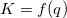
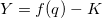
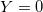

最終更新日:2015/02/10
複素方程式

のパラメータ") を計算するには、まず以下のように変換します。
を計算するには、まず以下のように変換します。

そして、

のときの を計算します。たとえば、 から
から までといった、 がある面積のことを考慮する必要があります。値の設定ツールを使用して、
までといった、 がある面積のことを考慮する必要があります。値の設定ツールを使用して、 のときのY値を計算します。そして、levelcrossing または Intersect ガジェットを使用して、 である正確な を検索します。
のときのY値を計算します。そして、levelcrossing または Intersect ガジェットを使用して、 である正確な を検索します。
キーワード:式, 値の設定ダイアログ
必要なOriginのバージョン:8.6